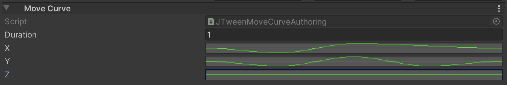

BuiltIn animations¶
Core¶
JustTweenIt provides two different methods for builtIn animations: for the main thread and scheduled jobs.
Methods for the main thread have optional parameters GameObjectConversionSystem conversionSystem and Component targetComponent.
This parameters are used during conversion stage on ECS.
Move Tweens¶
Move¶
Move - moves Translation component on moveDelta in durationSeconds
Main thread API:
public static void Move(this JTweenSequence sequence, EntityManager entityManager,
float3 moveDelta, float durationSeconds,
GameObjectConversionSystem conversionSystem = null, Component targetComponent = null)
Jobs API:
public static void Move(this JTweenSequence sequence, EntityCommandBuffer.Concurrent commandBuffer, int entityInQueryIndex,
ref DynamicBuffer<JTweenCommandElement> sequenceCommandBuffer,
float3 moveDelta, float durationSeconds)
MoveTo¶
MoveTo - moves Translation component to endPosition in durationSeconds

Main thread API:
MoveTo(this JTweenSequence sequence, EntityManager entityManager,
float3 endPosition, float durationSeconds,
GameObjectConversionSystem conversionSystem = null, Component targetComponent = null)
Jobs API:
public static void MoveTo(this JTweenSequence sequence, EntityCommandBuffer.Concurrent commandBuffer, int entityInQueryIndex,
ref DynamicBuffer<JTweenCommandElement> sequenceCommandBuffer,
float3 endPosition, float durationSeconds)
MoveCurve¶
MoveCurve - moves Translation component by AnimationCurve in durationSeconds. You can specify animation curves for each coordinates separately

Main thread API:
public static void MoveCurve(this JTweenSequence sequence, EntityManager entityManager,
AnimationCurve x, AnimationCurve y, AnimationCurve z, float durationSeconds,
GameObjectConversionSystem conversionSystem = null, Component targetComponent = null)
Jobs API:
public static void MoveCurve(this JTweenSequence sequence, EntityCommandBuffer commandBuffer,
ref DynamicBuffer<JTweenCommandElement> sequenceCommandBuffer,
AnimationCurve x, AnimationCurve y, AnimationCurve z, float durationSeconds)
Rotate Tweens¶
For rotation tweens you can set rotation angle in two ways: by euler angles in degrees or quaternions.
Rotate¶
Rotate - rotates Rotation component on rotationAngle in durationSeconds rotationAngle in degrees.

Main thread API:
public static void Rotate(this JTweenSequence sequence, EntityManager entityManager, float3 rotationAngle,
float duration,
GameObjectConversionSystem conversionSystem = null, Component targetComponent = null)
public static void Rotate(this JTweenSequence sequence, EntityManager entityManager, quaternion rotationAngle,
float duration,
GameObjectConversionSystem conversionSystem = null, Component targetComponent = null)
Jobs API:
public static void Rotate(this JTweenSequence sequence, EntityCommandBuffer.Concurrent commandBuffer, int entityInQueryIndex,
ref DynamicBuffer<JTweenCommandElement> sequenceCommandBuffer,
float3 rotationAngle, float duration)
public static void Rotate(this JTweenSequence sequence, EntityCommandBuffer.Concurrent commandBuffer, int entityInQueryIndex,
ref DynamicBuffer<JTweenCommandElement> sequenceCommandBuffer,
quaternion rotationAngle, float duration)
RotateTo¶
RotateTo - rotates Rotation component to rotationAngle in durationSeconds rotationAngle in degrees.
Main thread API:
public static void RotateTo(this JTweenSequence sequence, EntityManager entityManager,
float3 targetRotation, float durationSeconds,
GameObjectConversionSystem conversionSystem = null, Component targetComponent = null)
public static void RotateTo(this JTweenSequence sequence, EntityManager entityManager,
quaternion targetRotation, float durationSeconds,
GameObjectConversionSystem conversionSystem = null, Component targetComponent = null)
Jobs API:
public static void RotateTo(this JTweenSequence sequence, EntityCommandBuffer.Concurrent commandBuffer, int entityInQueryIndex,
ref DynamicBuffer<JTweenCommandElement> sequenceCommandBuffer,
float3 targetRotation, float durationSeconds)
public static void RotateTo(this JTweenSequence sequence, EntityManager entityManager,
quaternion targetRotation, float durationSeconds,
GameObjectConversionSystem conversionSystem = null, Component targetComponent = null)
Scale Tweens¶
Scale¶
Scale - scales NonUniformScale component by scaleDelta in durationSeconds.

Main thread API:
public static void Scale(this JTweenSequence sequence, EntityManager entityManager, float3 scaleDelta,
float durationSeconds,
GameObjectConversionSystem conversionSystem = null, Component targetComponent = null)
Jobs API:
public static void Scale(this JTweenSequence sequence, EntityCommandBuffer.Concurrent commandBuffer, int entityInQueryIndex,
ref DynamicBuffer<JTweenCommandElement> sequenceCommandBuffer,
float3 scaleDelta, float durationSeconds)
ScaleTo¶
ScaleTo - scales NonUniformScale component to targetScale in durationSeconds.
Main thread API:
public static void ScaleTo(this JTweenSequence sequence, EntityManager entityManager,
float3 endScale, float durationSeconds,
GameObjectConversionSystem conversionSystem = null, Component targetComponent = null)
Jobs API:
public static void ScaleTo(this JTweenSequence sequence, EntityCommandBuffer.Concurrent commandBuffer, int entityInQueryIndex,
ref DynamicBuffer<JTweenCommandElement> sequenceCommandBuffer,
float3 endScale, float durationSeconds)
Shake Tweens¶
Shake tweens use snoise to implementation of randomization.
RandomShakePosition¶
RandomShakePosition - shakes Translation component in durationSeconds with strength and frequency
strength- The shake max distance relative to start point. You can specify different strength for each axis;frequency- specify how fast target change position.
Main thread API:
public static void RandomShakePosition(this JTweenSequence sequence, EntityManager entityManager,
float3 strength, float frequency, float durationSeconds,
GameObjectConversionSystem conversionSystem = null, Component targetComponent = null)
Jobs API:
public static void RandomShakePosition(this JTweenSequence sequence, EntityCommandBuffer.Concurrent commandBuffer,
int entityInQueryIndex, ref DynamicBuffer<JTweenCommandElement> sequenceCommandBuffer,
float3 strength, float frequency, float durationSeconds)
RandomShakeRotation¶
RandomShakeRotation - shakes Rotation component in durationSeconds with strength and frequency
strength- The shake max angle, in degrees, relative to start angle. You can specify different strength for each axis;frequency- specify how fast target change angle.
Main thread API:
public static void RandomShakeRotation(this JTweenSequence sequence, EntityManager entityManager,
float3 strength, float frequency, float durationSeconds,
GameObjectConversionSystem conversionSystem = null, Component targetComponent = null)
Jobs API:
public static void RandomShakeRotation(this JTweenSequence sequence, EntityCommandBuffer.Concurrent commandBuffer,
int entityInQueryIndex, ref DynamicBuffer<JTweenCommandElement> sequenceCommandBuffer,
float3 strength, float frequency, float durationSeconds)
RandomShakeScale¶
RandomShakeScale - shakes NonUniformScale component in durationSeconds with strength and frequency
strength- The shake max scale relative to start scale. You can specify different strength for each axis;frequency- specify how fast target change scale.minScale- if set, clamps bottom shake scale to this value.maxScale- if set, clamps upper shake scale to this value.
minScale and maxScale can be used to prevent scales to negative values. It is convenient if object default scale is near 1 and scale strength is bigger than 1;

Main thread API:
public static void RandomShakeScale(this JTweenSequence sequence, EntityManager entityManager, float3 strength, float frequency,
float durationSeconds, float3? minScale = null, float3? maxScale = null,
GameObjectConversionSystem conversionSystem = null, Component targetComponent = null)
Jobs API:
public static void RandomShakeScale(this JTweenSequence sequence, EntityCommandBuffer.Concurrent commandBuffer, int entityInQueryIndex,
ref DynamicBuffer<JTweenCommandElement> sequenceCommandBuffer,
float3 strength, float frequency,
float durationSeconds, float3? minScale = null, float3? maxScale = null)
Color Tweens¶
BaseColorTo¶
BaseColorTo - lerp material _BaseColor property in durationSeconds to targetColor
Main thread API:
public static void BaseColorTo(this JTweenSequence sequence, EntityManager entityManager,
float4 targetColor, float durationSeconds,
GameObjectConversionSystem conversionSystem = null, Component targetComponent = null)
Jobs API:
public static void BaseColorTo(this JTweenSequence sequence, EntityCommandBuffer.Concurrent commandBuffer, int entityInQueryIndex,
ref DynamicBuffer<JTweenCommandElement> sequenceCommandBuffer, float4 targetColor, float durationSeconds)
BaseColorGradient¶
BaseColorGradient - lerp material _BaseColor property in durationSeconds by gradient value

Main thread API:
public static void BaseColorGradient(this JTweenSequence sequence, EntityManager entityManager,
Gradient gradient, float durationSeconds,
GameObjectConversionSystem conversionSystem = null, Component targetComponent = null)
Jobs API:
public static void BaseColorGradient(this JTweenSequence sequence, EntityCommandBuffer commandBuffer, int entityInQueryIndex,
ref DynamicBuffer<JTweenCommandElement> sequenceCommandBuffer,
Gradient gradient, float durationSeconds)